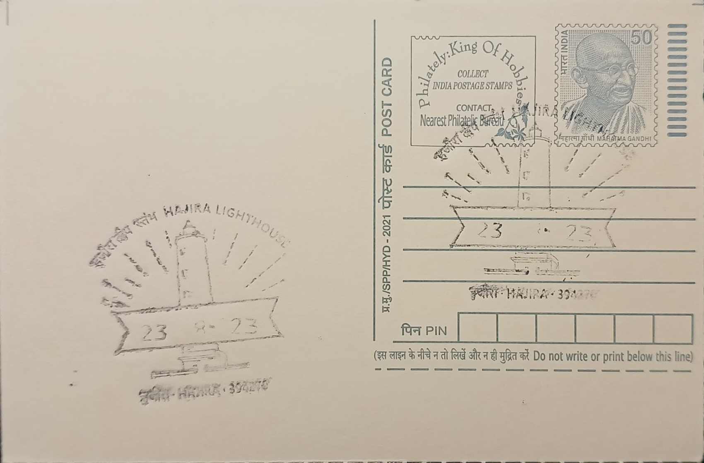

Hajira Lighthouse
હજીરા દીવાદાંડી


The name Hazira (also rendered Hajira) traces to Suwali, the point on the Tapi river's mouth near Surat where the earliest navigational marker on this stretch of coast was raised. In 1697, John Vaux and his wife drowned here when their boat capsized on the river, and a commemorative structure known as Vaux's Tomb was subsequently built at the river mouth, itself serving incoming sailors as an informal guide long before any formal light was lit. It was beside this landmark that the first dedicated lighthouse tower at Suwali point was later raised, tying the site's maritime identity to an incident of personal tragedy turned into a point of seafaring reference.
Hajira Lighthouse is classified among the shore-based "general aids to navigation" maintained by the Directorate General of Lighthouses and Lightships (DGLL), under India's Ministry of Ports, Shipping and Waterways, whose charge covers roughly 11,098 kilometres of coastline including Lakshadweep and the Andaman and Nicobar Islands. Administratively it falls under the Directorate of Lighthouses and Lightships, Mumbai, one of DGLL's regional directorates, which oversees 23 lighthouses across Maharashtra and the southern Gujarat coast, stretching about 1,200 kilometres from Rajapur Bay to Luhara Point. Its significance lies less in scale than in function: it marks the approach to the Tapi estuary and the waters off Surat, a stretch of coast carrying heavy commercial shipping tied to Hazira's port and petrochemical complexes as well as artisanal fishing traffic.
The original lighthouse at Suwali point was a circular masonry tower some 20 metres tall, built in 1835-36, with a petromax optical apparatus installed in April 1836; a fire destroyed this equipment within months, in October of the same year, and repairs took roughly a year, with the light re-exhibited in September 1837. The structure was subsequently upgraded in 1852 and again in 1893, and in 1938 its optic was replaced with a revolving petroleum-vapour (P.V.) assembly supplied by Chance Brothers of Birmingham. That tower was eventually superseded by an entirely new 25-metre circular masonry tower built in 1965-66, fitted with an electrical optical apparatus from B.B.T. of Paris, whose light was first exhibited on 1 June 1966 and which forms the structure standing today.
A notable feature distinguishing the present-day station is its dual role: alongside the optical light, Hajira houses a Differential Global Positioning System (DGPS) reference station, part of DGLL's shore-based network that transmits correction signals to improve satellite positioning accuracy for vessels navigating the approaches to Hazira and Surat. This pairing of a nineteenth-century masonry tower lineage with twenty-first-century satellite-augmentation infrastructure reflects a broader pattern across India's lighthouse network, where legacy towers have been retrofitted to serve modern electronic navigation alongside their traditional optical beacons, rather than being retired once automated lighting became standard.
The lighthouse today is administered as a public-access site by the Mumbai Directorate of DGLL, with entry managed through an online and QR-code-based ticketing system that permits grounds access to visitors, situated roughly 35 kilometres from Surat city by road. It stands amid the continued expansion of the adjoining Hazira industrial and port belt, which has grown into one of Gujarat's major centres for petrochemicals, steel, and LNG handling since the lighthouse's last major rebuild in the 1960s. The tower's combined duty as a working aid to navigation and a visitable heritage structure keeps it under DGLL's direct operational care even as the coastline around it has industrialised well beyond what its nineteenth-century builders would have anticipated.
| Date of Introduction | September 21, 2021 |
|---|---|
| Address | Sub Postmaster, |
| Hajira SO, | |
| Surat (dt.), Gujarat - 394270. |